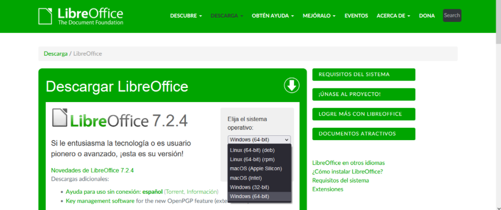
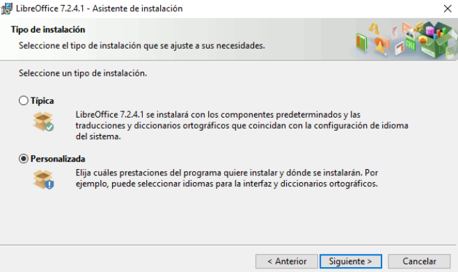
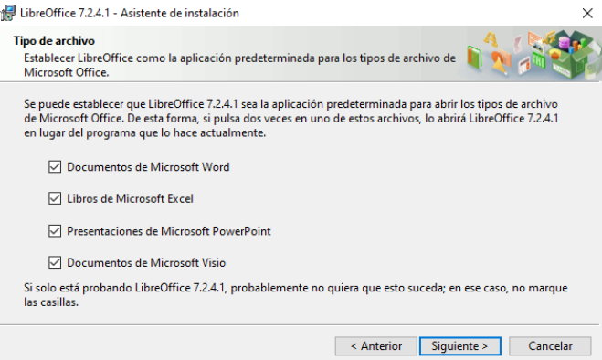
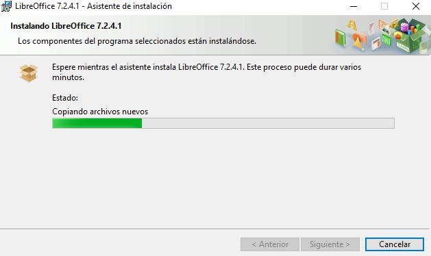

La instalacion es muy sencilla:
Los primero sera dirigirnos a la pagina OFICIAL del producto, no es recomendable realizar descargas de programas en sitios web no oficiales. Pagina Oficial de Libre office
Los siguiente sera ir al apartado de descargas y seleccionar la version y nuestro sistema operativo
Ejecutamos el archivo .exe, le damos a siguiente y a personalizar
Seleccionamos los programas ofimáticos de Microsoft Office que nos interese abrir con esta suit y le damos a siguiente
Finalmente le damos al boton de instalar y esperaremos hasta que se complete el proceso
